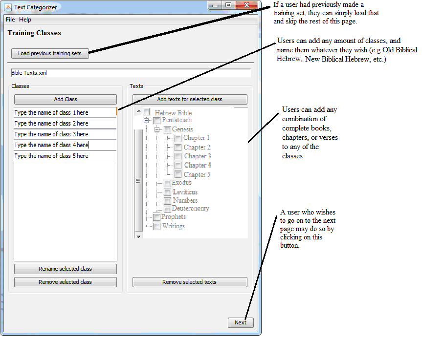
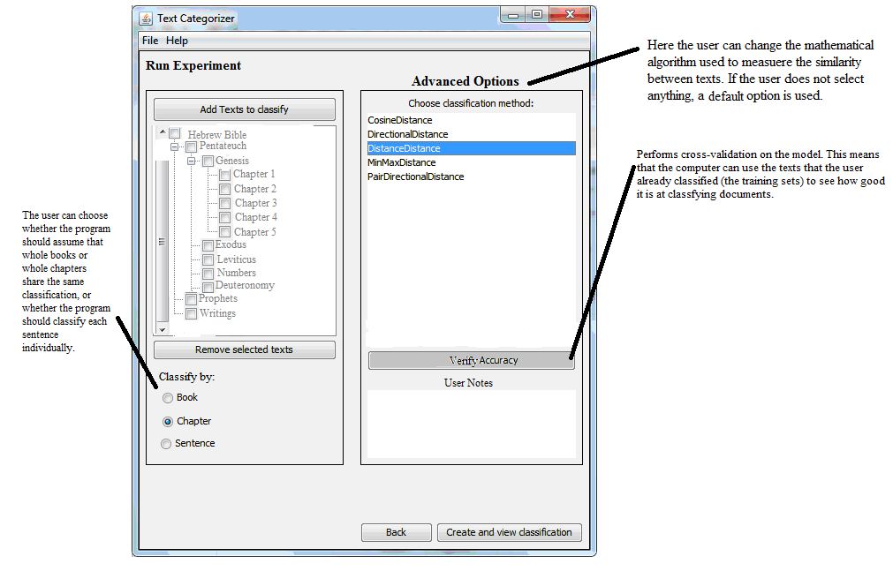
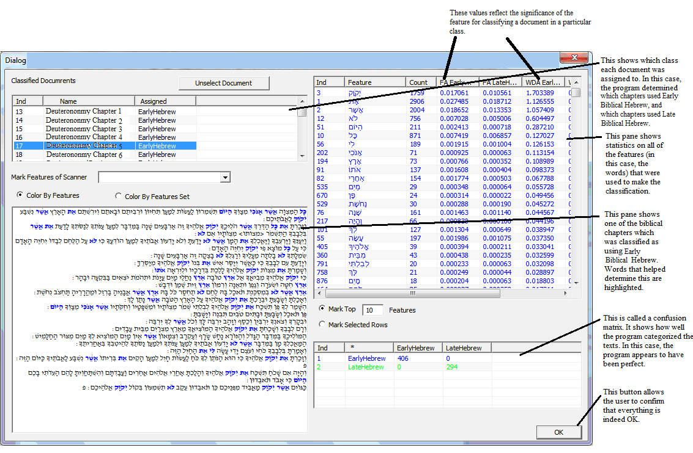

Detailed Description of the Research Program
Scientific Background
In the past several decades scholars of the Hebrew Bible have attempted to delineate the style of a given biblical book or hypothesized biblical author based on impressionistic methods. Yet by and large, the attempts to delineate a thoroughgoing analysis of a text's distinct style have been rejected out of concern for statistical and methodological flaws and the lack of sufficient control. Some have attempted to do so with the aid of computerization, but these efforts have not been met with much enthusiasm for the same reasons.
Over the last forty years, computerized tools have been a boon to biblical scholarship. Powerful text-mining applications such as Logos and Accordance allow for sophisticated lexigraphic and morphographic searches of Hebrew Scripture. Accordance provides statistical analysis for the distribution of any given word or morphological marker. None of these, however, use cutting-edge methods from the fields of computational linguistics and text-categorization to weight the constellation of thousands of markers together toward the end of delineating a text class or category.
These same limitations characterize the tools for textual analysis available within the humanities generally today. Some applications supply morphological annotation to a text, such as WordHoard and Stanford CoreNLP. The tools indexed in the Text Analysis Portal for Research (TAPoR) and in the MONK (Mettadata Offer New Knowledge) project provide a range of services that enhance display, mining and cross-reference of texts. However, all these tools simply provide the output of manual tagging. They do not include tools that can use these tags to infer information about other texts for which such information is lacking. In particular, none execute the simultaneous analysis of hundreds of linguistic markers to determine text categorization, as we propose to do.
The proposed project is based upon ten years of research by Koppel in the area of text categorization and authorship attribution. Koppel’s work includes novel methods for determining authorship of an anonymous document from among a small closed set of candidates, methods for providing a demographic profile of an anonymous author and, more recently, determining authorship from among a very large (thousands of authors) open set of candidates.
In the past few years, Koppel has considered the problem of decomposing a multi-author document into authorial threads. In experiments on the Hebrew Bible, these methods proved startlingly precise and have garnered much attention. Koppel took all the verses of two lengthy biblical books describing the same period of biblical history--Jeremiah and Ezekiel--and effectively shuffled them together, creating a single merged text of randomly ordered verses. Without any other input, he instructed the algorithm to split the file by style into two sets of verses. The algorithm could assign a verse to set A, to set B, or could reserve judgment on a decision. For approximately 19% of the verses, the algorithm made no decision. For the remaining 81%, the algorithm split the verses into two sets that with 99% accuracy accorded to the books of Jeremiah and Ezekiel. Koppel repeated this experiment with three other pairings of biblical books of similar genre: 1) Proverbs and Job (chs. 3-41); 2) Isaiah (chs. 1-33) and Ezekiel; 3) Isaiah (chs. 1-33) and Jeremiah. The results were replicated time and again: the algorithm would assign approximately 80% of the verses to two sets reflecting the books in question, and would do so with extremely high accuracy. The time is now ripe to further develop this software so that it can be usable by scholars of biblical studies, with no expertise in the implemented computational methods.
Working Hypothesis
The field of text-categorization focuses on the trove of more subtle linguistic characteristics that texts contain. For example, given any biblical text (verse, chapter or book), the proposed tool computes the frequency in the text of each of a huge array of textual features, including individual words, phrases, parts of speech, morphological structures, syntactic and text-grammatical values and many more. Many hundreds of similar such subtle patterns are formally combined to extrapolate a single optimal rule that distinguishes one given set of texts from another.
Our tool will allow users to conduct two types of experiments. One type of experiment involves "supervised learning." Here the user provides the algorithm with two baseline sets of texts to serve as the basis for inferring a rule that can be used for determining the identity of a third text. By contrast, the example described earlier, where Koppel parsed a merged file of biblical texts (i.e. Jeremiah and Ezekiel), is called an experiment of "unsupervised learning." In this type of experiment the algorithm has no base set of texts from which to learn. Rather it determines the optimal way in which to split the file into the number of authorial sets determined by the user.
There are many supervised learning experiments that scholars might wish to conduct: one scholar might want to determine whether a text exhibits books that reflect classical biblical Hebrew or books that reflect early late biblical Hebrew. Another scholar will wish to determine whether a given psalm more closely resembles the style of the genre of petition or that of the genre of praise, or whether a given passage in Isaiah more closely reflects the style of First Isaiah or Deutero-Isaiah. It will be clear to scholars in the field that rarely is there complete scholarly unanimity about any of these issues. Many scholars are prepared to see a given set of books as reflective of pre-exilic Hebrew, and some as reflective of post-exilic Hebrew. But others demur. Just as there is debate about whether there really is early vs. late Hebrew, there is debate as to whether Isaiah should be split into two or three (or more). There is debate as to the definition and parameters of the different genres of the Psalms, etc. It must be emphasized that the investigators in the current proposal have no stake in any of these debates, and that our tool is not predicated on one side of any of these debates. It is the responsibility of the researcher to defend his or her choice of text sets. It is our hope that the data available only with use of our tool will serve to claims of text categorization by bringing to light a trove of data previously unavailable. In the appendix we portray a typical user experience following the course of a supervised learning experiment, complete with screenshots of the proposed user interface.
Experimental Design and Methods
Some recent software packages used in the text-categorization community incorporate a number of the elements we will include in our system. These include Patrick Juola’s JGAAP package, JStylo, Signature, Writeprint Stylometry,and the Delta Spreadsheets. Unlike these systems, however, ours will be especially designed to exploit precisely the textual characteristics such as morphology and syntax that are useful for the Hebrew Bible and will include a graphical user interface especially designed for use by a Hebrew Bible scholar (See Appendix – Examples of User Interface).
The Hebrew Bible is already fully annotated in digitized form in several commercially available software applications: part-of-speech tagging, syntactic parsing, and dependency parsing to decompose sentences into their grammatical constituents. In fact, the availability of canonical translations of the entire biblical corpus permits us to automatically identify synonym sets, which are also useful as features for authorship attribution, as demonstrated in Koppel's earlier work referred to earlier (above, p. 2).
Research Objectives and Expected Significance
The proposed tool will incorporate machine-learning tools of the most sophisticated sort alongside an intuitive interface especially designed for scholars of the Hebrew Bible (See Appendix). In later stages of development, the sophisticated user will be able to choose from a vast array of feature sets and learning algorithms. However, the scholar who does not wish to grapple with the intricacies of advanced software will be able to take advantage of default settings optimally chosen on the basis of the developers’ expertise in handling these sorts of problems.
In addition, the user will be spared the need to upload data and to deal with pre-processing the data. The entire biblical corpus, including all encoding, tagging and cleaning, will be pre-loaded, leaving the user only to indicate (from a drop-down menu) which texts to use as training examples for each class under consideration in experiments of supervised machine learning. The pre-loaded data will leverage all the manual tagging available for biblical literature-- translations, synonyms, morphology, syntax, disambiguation of homonyms, etc.
The output that we will provide will display the features that best distinguish between two or more training sets and we will also show which of these are responsible for a particular determination regarding a given test document.
Users will also be empowered to conduct experiments of unsupervised learning. Choosing from a drop down menu, users will be able to specify any set of texts they wish and instruct the tool to split that text into the number of authorial sets that the user determines, as Koppel did with the merged files, described above.
Detailed Description of the Proposed Research
The tool that we propose to put in the hands of scholars will:
Thus, biblical scholars will be able to exploit all available measurable information regarding a text in order to verify or falsify hypotheses about apparent divisions of the biblical oeuvre into distinct stylistic threads.
The first phase of the project, which will encompass the first year of funding, includes specially adapted tools for handling cases where users engage in experiments of supervised learning (see Appendix for an example). In the second year of funding, we will enable scholars to separate texts into constituent parts, even in the absence of user-provided sets of “baseline” texts, or what is called “unsupervised” learning.
Throughout the duration of the project, Berman will lead the effort to catalog the range of text classification questions that biblicists routinely face, so as to define the features that will make for an effective application. Koppel and the software developers will design natural language processing tools to automatically extract all these features from a text. The developers will have expertise in Java and natural language processing, experience in interface design, and familiarity with biblical Hebrew. Koppel and Berman will instruct the developers on how to adapt our text categorization tools to the problems at hand, focusing especially on developing a graphical user interface that meets the needs of scholars not expert in our methods. In the final phase Berman will coordinate the effort to test the efficacy of our methods on the central open problems in the field of biblical studies. Once the initial prototype is functional he will take advantage of the large number of experts at Bar-Ilan in Hebrew Bible and Biblical Hebrew to experiment with the system and to propose adaptation to the system as necessary. From there, Berman will turn to leading experts in Israel in the linguistics of the Hebrew Bible. Following the implementation of these further refinements, Berman will turn to experts outside of Israel on the use of computerization in the study of the Hebrew Bible. It would be quite natural at this point to engage the circle of scholars associated with the Eep Talstra Center for Computer and Bible in Amsterdam. The Center is currently engaged in a major project researching biblical syntax, and the expertise garnered there will surely contribute to the design of our tool. Berman will also be responsible for application documentation and the overall administration of the project. This documentation will include explanations concerning the choice of database and our handling of a variety of grammatical issues.
During the course of the grant-funded period, we will complete a working web-application that will be freely available via a dedicated public website. Once the site is public, scholars will be able to test the application and provide additional feedback. The project directors will present the project at a number of conferences in their respective fields, such as the Society for Biblical Literature and the Association of Computational Linguistics.
Concerning the housing of the code and the algorithm, we will a web based interface to process and analyze the data. The actual code, integration and build of the system will be done in back office, and hosted on web based source control. Data and source code will be stored on web based configuration management services (GitHub).
Users will be able to access the service online (in a service mode - without need to download and install an executable). All products of research done using our software and data will be the property of the researcher using the program.
Preliminary Results
Preliminary experiments to date have been carried out using the database of Bar-Ilan University’s Responsa project in conjunction with the tagging of the Westminster Hebrew morphology database. These resources have allowed us to produce impressive results primarily on the basis of lexical and morphological markers. Moving forward, we will mine syntactic tagging as well. We emphasize that any measurable linguistic feature is within our scope, including syntactic variants such as quoted speech, dependent clauses, noun phrases, construct state strings, use of object marker, verb-object and verb-subject order, and more.
Analysis of this nature will require us to obtain licensing rights to a more sophisticated database such as the Andersen-Forbes database, or the Hebrew Werkgroep Informatica database (WIVU). If funded, we will turn to the proprietary owners of these databases. Four factors will determine our choice of database: 1) the willingness and flexibility of the proprietary owners to license to us use of the database 2) the cost to attain the license 3) the encoding of the tagging, and the ease with which our software developers can work with the database 4) the sophistication of the syntactic tagging.
Pitfalls
Bible scholars are largely unaccustomed to working with quantitative tools. It will take some time before the scholarly community learns to use the application properly and to incorporate the findings it produces into the larger fabric of scholarship. Statistics are easy to manipulate, and indeed, Biblicists may need to turn to statisticians and to computational linguists to distinguish between competing claims. All areas of critical biblical study ultimately rely on the most trained and most accomplished scholars in a given sub-filed as arbiters, and we suspect that leaders will emerge in the prudent use of these technologies. There is no panacea here, and the tool will not "solve" all of the great problems facing the field that surround issues of text categorization. As this reality emerges there will be some who will wish to, proverbially speaking, "throw the baby out with the bathwater." The field as a whole will undergo a period of learning, but we have confidence that the tool will be recognized as a significant contribution that can shed valuable light on a wide array of scholarly questions.
Appendix : Illustration of User Experience in a Supervised Learning Experiment

A user accesses the proposed tool on the web with no need to download software or upload and prepare texts for analysis. On this screen, she begins to set up her experiment. Let us suppose that she wishes to test a proposal for the dating of the book of Deuteronomy. She believes that certain books of the Hebrew Bible reflect classical biblical Hebrew and others reflect later biblical Hebrew. On this screen she will define two training classes. In one, she will load books that define the class Early Hebrew. In her second class, she will load books that define Late Hebrew. Exactly which books should be placed into each category is a subject of debate, and our scholar is responsible for explaining her choice of texts for each training class. These serve as training texts that the algorithm will use to produce an optimal rule (or, "classifier") for her proposed corpora of standard and late biblical Hebrew.

Our researcher chooses the Book of Deuteronomy as the text that she wishes to classify. She can choose the type of results she wishes to receive. She may wish to know, simply, whether the book of Deuteronomy as a whole reflects early or late Hebrew. She may wish to get results for each chapter of that book; perhaps some chapters reflect early Hebrew, while perhaps other chapters were composed and added to the book later. Or, she may wish to examine each and every sentence of the book. It may turn out that the while most of the book reflects early Hebrew, a handful of sentences will reflect late Hebrew and will suggest that these were later additions to the book. In this illustration, she has chosen to analyze the book by chapter.
The advanced user might wish to specify the nuts and bolts of the underlying statistical methods to be used. Some methods yield more elegant and comprehensible rules for distinguishing classes, while other might prefer more complicated rules which are more accurate. The user not familiar with the underlying mathematics or not interested in complicating the process can simply rely on the chosen default values built into the system and focus on matters more directly germane to the biblical issues.

In this frame, the researcher receives her results. As per her selection, she is given the analysis of the Book of Deuteronomy by chapter. Here the results are presented for Deuteronomy chapter 5. The highlighted text at the lower left indicates the lexemes in the chapter that contributed to the determination that this chapter reflects early biblical Hebrew. The table on the upper right presents the terms in order of statistical significance that contributed to this classification. Using a method known as Bayesian regression, we established the optimal weights to assign to each such word. The weighting offers scholars a breakthrough to an age-old problem. Scholars have long been hesitant to assign significance to words that appeared predominantly, say, in standard biblical Hebrew texts, but also appeared in late biblical Hebrew texts. For the first time, this algorithm allows scholars to consider the import of all terms, with their appropriate weight. The list provided is not only theoretically correct, but empirically so. This screen shows only the lexical markers that contributed to this determination. Morphological and syntactic markers can also be displayed.
In all such experiments, the software provides a list of the (lexical, morphological and syntactic) features the usage of which differs most significantly between the training texts in the respective categories. Furthermore, the software highlights in the test text those features that provide the basis for the classification of that text. Thus, in the upper right pane, we show the respective frequencies of various words in pre-exilic and post-exilic texts, respectively. We further show the frequency of each of these words in the selected text (shown in the lower left pane). In this example, the system has concluded that the selected text is early Hebrew. For each linguistic feature (in this case, words), the system indicates the extent to which that word contributed to the conclusion that the text is indeed early Hebrew. The strongest indicators are highlighted in the text in blue. (The user can choose to have negative indicators – that is, words the appearance of which suggests a conclusion contrary to that of the system’s conclusion – marked as well.)
Bibliography
Statistical and Computer-Aided Studies of Style in the Hebrew Bible
Hebrew Publications
Studies in the Field of Authorship Attribution
27. N. Akiva and M. Koppel (2012). Identifying Distinct Components of a Multi-Author Document, Proceedings of European Intelligence and Security Informatics Conference (EISIC) 2012, July 2012
28. S. Argamon, M. Koppel , J. Fine and A. Shimoni (2003), Gender, Genre, and Writing Style in Formal Written Texts, Text , 23(3), August 2003.
29. S. Argamon, M. Koppel, J. Pennebaker and J. Schler (2009), Automatically Profiling the Author of an Anonymous Text, Communications of the ACM , 52 (2): 119-123 (virtual extension).
30. S. Argamon and M. Koppel (2010), The Rest of the Story: Finding Meaning in Stylistic Variation, in The Structure of Style: Algorithmic Approaches to Understanding Manner and Meaning (S. Argamon, K. Burns & S. Dubnov (eds.), Springer-Verlag: Berlin, pp. 79-112.
31. M. J. Berryman, A. Allison, and D. Abbott. 2003. Statistical techniques for text classification based on word recurrence intervals. Fluctuation and Noise Letters, 3(1):L1-L10.
32. J. Clark and C. Hannon. 2007. A classifier system for author recognition using synonym-based features. Proc. Sixth Mexican International Conference on Artificial Intelligence, Lecture Notes in Artificial Intelligence, vol. 4827, pp. 839-849.
33. I. S. Dhillon, Y. Guan, and B. Kulis. 2004. Kernel k-means: spectral clustering and normalized cuts. Proc. ACM International Conference on Knowledge Discovery and Data Mining (KDD), pp. 551-556.
34. N. Graham, G. Hirst, and B. Marthi. 2005. Segmenting documents by stylistic character. Natural Language Engineering, 11(4):397-415.
35. D. Guthrie, L. Guthrie, and Y. Wilks. 2008. An unsupervised probabilistic approach for the detection of outliers in corpora. Proc. Sixth International Language Resources and Evaluation (LREC'08), pp. 28-30.
36. S. Hota, S. Argamon, M. Koppel, I. Zigdon (2006). Performing Gender: Automatic Stylistic Analysis of Shakespeare's Characters, in Proc. Digital Humanities, July 2006.
37. D. Holmes. 1994. Authorship attribution, Computers and the Humanities, 28(2):87-106.
38. P. Juola. 2008. Author Attribution. Series title: Foundations and Trends in Information Retrieval. Now Publishing, Delft.
39. M. Koppel, S. Argamon and A. Shimoni (2003), Automatically categorizing written texts by author gender, Literary and Linguistic Computing 17(4), November 2002, pp. 401-412.
40. M. Koppel and J. Schler (2003), Exploiting Stylistic Idiosyncrasies for Authorship Attribution, in Proceedings of IJCAI'03 Workshop on Computational Approaches to Style Analysis and Synthesis, Acapulco, Mexico.
41. M. Koppel, N. Akiva and I. Dagan (2003), A Corpus-Independent Feature Set for Style Based Text Categorization, in Proceedings of IJCAI'03 Workshop on Computational Approaches to Style Analysis and Synthesis, Acapulco, Mexico.
42. M. Koppel and J. Schler (2004), Authorship Verification as a One-Class Classification Problem, in Proceedings of 21st International Conference on Machine Learning, July 2004, Banff, Canada, pp. 489-495.
43. M. Koppel and J. Schler (2005), Using Neutral Examples for Learning Polarity (poster), Proceedings of IJCAI, Edinburgh, Scotland, July 2005.
44. M. Koppel, N. Akiva, and I. Dagan. 2006. Feature instability as a criterion for selecting potential style markers. J. of the American Society for Information Science and Technology, 57(11):1519-1525.
45. M. Koppel, D. Mughaz and N. Akiva (2006), New Methods for Attribution of Rabbinic Literature , Hebrew Linguistics: A Journal for Hebrew Descriptive, Computational and Applied Linguistics, to appear.
46. M. Koppel, J. Schler and E. Bonchek-Dokow (2007), Measuring Differentiability: Unmasking Pseudonymous Authors, JMLR 8, July 2007, pp. 1261-1276.
47. M. Koppel, J. Schler, and S. Argamon. 2009. Computational methods in authorship attribution. J. of the American Society for Information Science and Technology, 60(1):9-26.
48. M. Koppel, N. Akiva, I. Dershowitz and N. Dershowitz, (2011). Unsupervised Decomposition of a Document Into Authorial Components, Proceedings of ACL, Portland OR, June 2011, pp. 1356-1364.
49. M. Koppel, J. Schler and S. Argamon (2012), The Fundamental Problem of Authorship Attribution, English Studies (Special issue on stylometry and authorship attribution), 93(3), pp. 284-291.
50. D. L. Mealand. 1995. Correspondence analysis of Luke. Lit. Linguist Computing, 10(3):171-182.
51. S. Meyer zu Eisen and B. Stein. 2006. Intrinsic plagiarism detection. Proc. European Conference on Information Retrieval (ECIR 2006), Lecture Notes in Computer Science, vol. 3936, pp. 565–569.
52. K. Nigam, A. K. McCallum, S. Thrun, and T. M. Mitchell. 2000. Text classification from labeled and unlabeled documents using EM, Machine Learning, 39(2/3):103-134.
53. E. Stamatatos. 2009. A survey of modern authorship attribution methods. J. of the American Society for Information Science and Technology, 60(3):538-556.
Created with the Personal Edition of HelpNDoc: Easily create EBooks